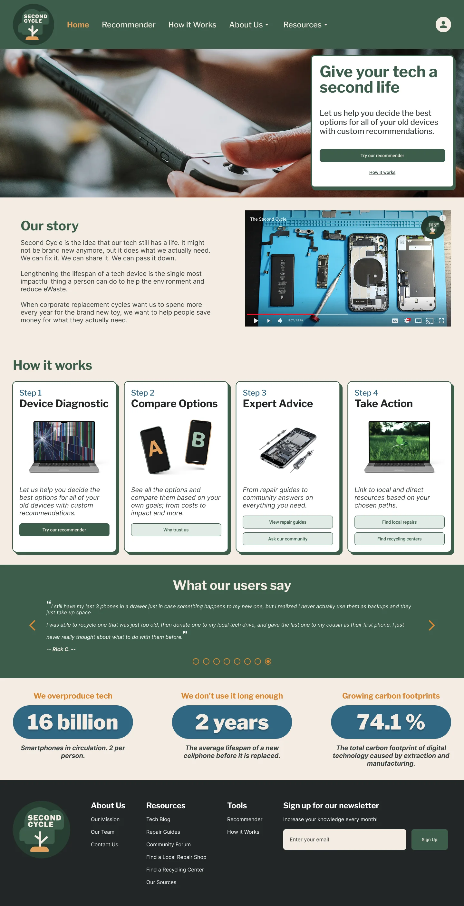
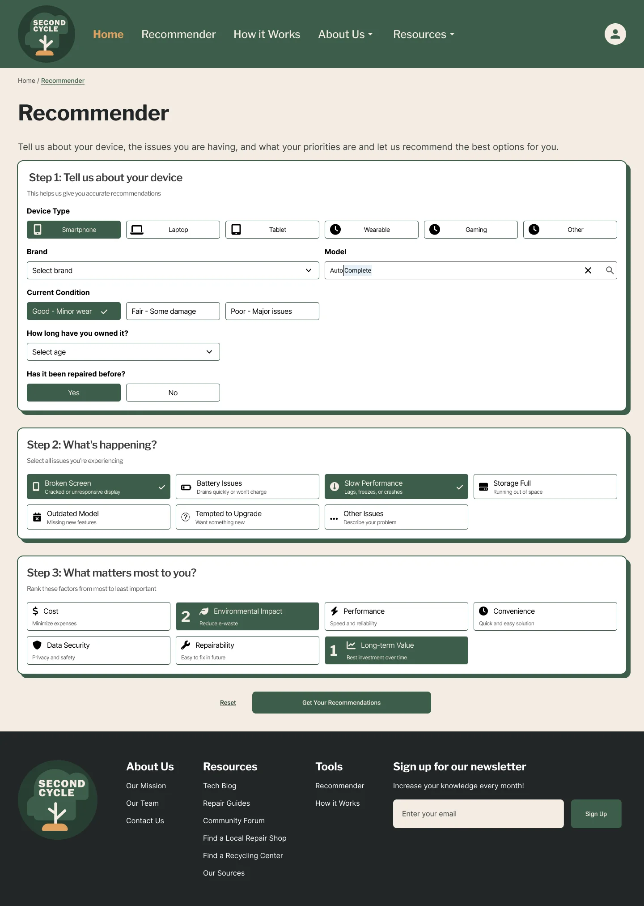
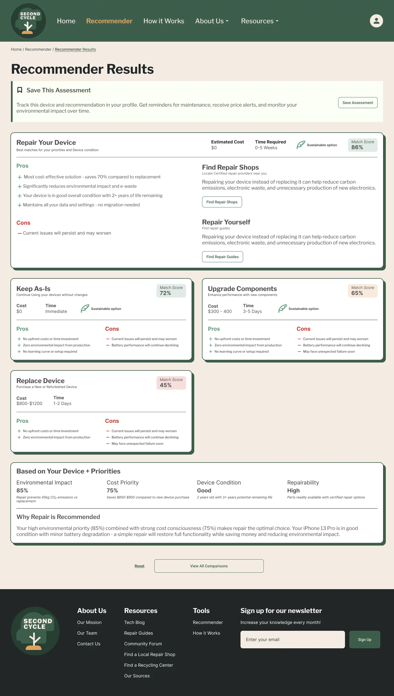
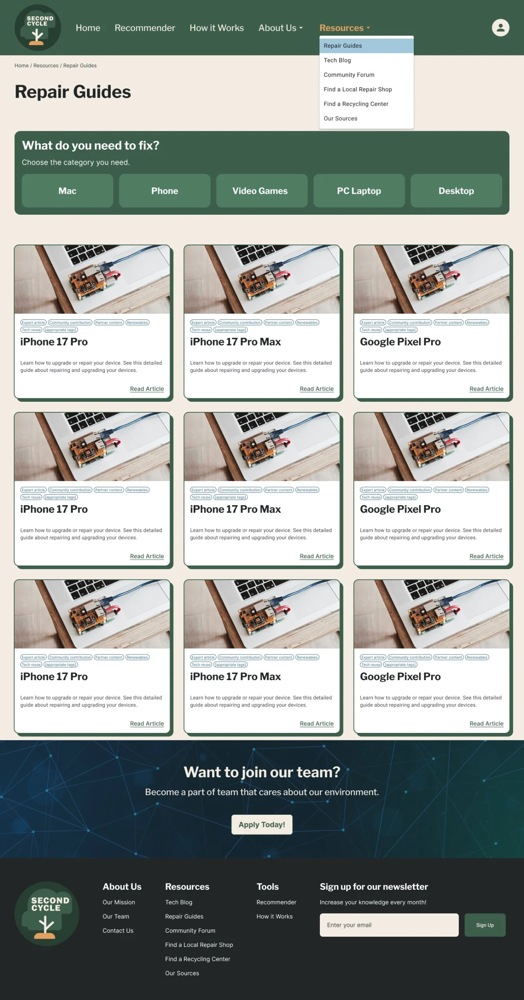
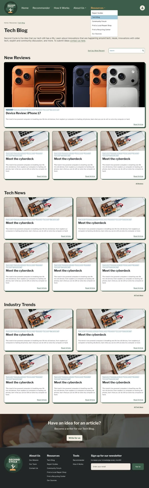

Discover
Contextual inquiries, interviews, literature review and recruitment screening.
What if the most sustainable device is the one you already own? A decision-support experience for making smarter choices about aging technology.

When technology stops working, people face a surprisingly complicated decision: repair it, keep using it, replace it, or recycle it?
Our team explored why people struggle to make these choices. We found that even people interested in sustainable behavior often encounter confusing repair costs, fragmented advice, and uncertainty about who to trust.
Second Cycle was designed to bring these decisions into one understandable experience—without making people feel guilty about their choices.
Choose the option closest to your instinct.
Each route comes with different costs, trade-offs, and questions.
This is an illustrative interaction for the portfolio, not a user research survey.
We combined a recruitment screener, contextual interviews, thematic analysis, and a branching decision exercise to understand what people actually do when devices age or break.
Device habits and attitudes
Patterns across lived experiences
Decision scenarios in Twine
First-click and qualitative feedback
The final report describes 10 research sessions conducted and nine sessions analyzed. These figures represent different stages of the research.
I contributed to identifying emerging themes across needs, behaviors, triggers, and motivations. Explore how the findings informed the product.
Cost and financial considerations emerged across the research themes. People may prefer repair in principle, but the price and uncertainty can lead them to replace instead.
The team moved from interviews and affinity mapping into personas, journey maps, competitive analysis, and feature prioritization.
Contextual inquiries, interviews, literature review and recruitment screening.
Emerging themes, affinity mapping, personas and a journey map.
Seven-platform competitor review and impact-versus-effort decisions.
Wireframes, prototypes, click testing and qualitative feedback.
In the branching laptop-failure activity, six participants went through multiple rounds of searching before finding a useful result. Five of seven paths ended at a cost-related decision point.
Instead of asking users to piece together advice from forums, search engines, repair shops and manufacturers, the concept brought options and next steps into one flow.
The product follows a simple journey: understand the device, compare options, then find the resources needed to act.
Users describe their device, its condition and the issues they're experiencing. Then they rank what matters most, such as cost, environmental impact, performance and long-term value.


During group brainstorming, I suggested showing match percentages and making repair-versus-replacement comparisons easier to understand. The idea was to help users judge whether a repair is worth the investment—or whether another option makes more sense.
Prototype transparency: the match scores shown in the actual design were example values, not a validated algorithm.
Second Cycle extends beyond the recommendation with repair guides, a repair-and-recycling locator concept, and educational resources. These help connect an informed decision to something users can actually do.

Explore how a comparison interface might emphasize different options. This is an illustrative portfolio demo, not the Second Cycle scoring engine or an actual repair recommendation.
The indicators in this demo are qualitative visual aids. They do not estimate actual repair costs, environmental savings, or validated match percentages.
Explore selected screens from the team's high-fidelity prototype. Scroll inside any laptop to explore the full screen.

Browse the full set of Second Cycle screens, from the homepage and recommender to the repair locator, guides and tech blog, stacked one below the other.
Open in Figma ↗Nine participants completed the click test and qualitative questions. Their responses helped us see where the prototype worked and where the concept still needed clarity.
All nine selected the Recommender when asked where to go for help deciding what to do with a broken device.
Most participants mistook the site for a direct repair, purchase or trade-in service—an important messaging problem.
Most participants considered the concept useful, despite confusion about some features and the site's overall purpose.
With an eight-week capstone timeline, the team made limited changes after testing. Much of the project time went into research, interviews, synthesis and prioritizing the right product direction.
We treated the remaining issues as future opportunities rather than claiming they were fully resolved.
I contributed across research and design, including interviews, emerging-theme synthesis, brainstorming, wireframes, UI design and prototyping.
Second Cycle was a collaborative academic concept, not a commercially launched product. Design and research outcomes are attributed to the team unless specifically described as my contribution.